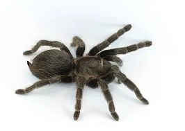
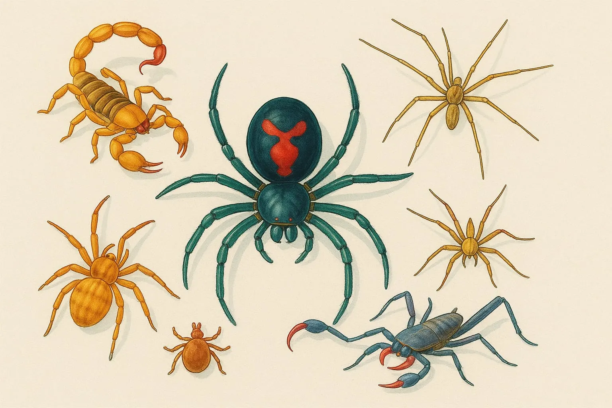
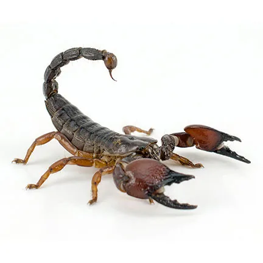
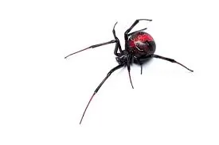
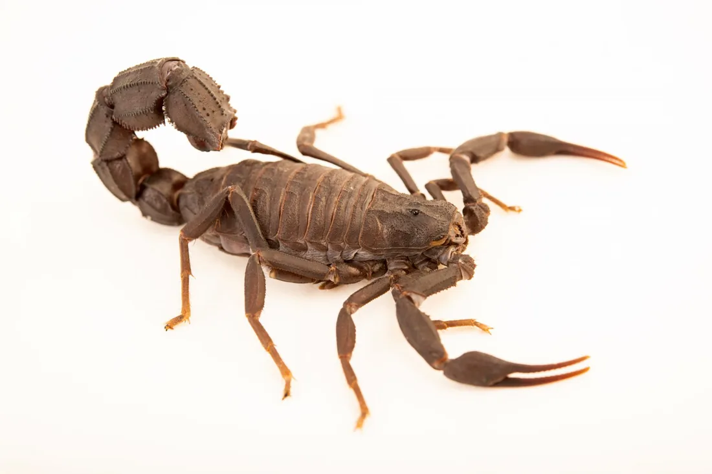
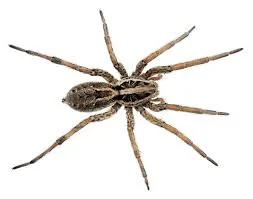
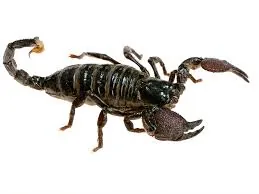

Arachnids
Tarantula
Theraphosidae
Large, hairy spiders found in tropical and subtropical regions. Some live in ground burrows and others live in trees.

They crawl, they spin, they hunt. Arachnids are not just spiders: scorpions, mites and ticks are arachnids too. Most of them help nature by eating insects.
Select “Learn more” on any card for habitat, diet and a fun fact.

Arachnids
Theraphosidae
Large, hairy spiders found in tropical and subtropical regions. Some live in ground burrows and others live in trees.

Arachnids
Scorpiones
Scorpions have a segmented tail that curves over the back and ends in a venomous stinger, plus a pair of pincers.

Arachnids
Latrodectus
Black widows have glossy black bodies, often with a red or orange hourglass on the belly. They are known for their strong venom.

Arachnids
Androctonus australis
Known for its thick tail. Some species in this group have venom that is medically significant to humans.

Arachnids
Lycosidae
Active hunters known for speed and agility. They do not build webs to catch prey, and females carry their young on their backs.

Arachnids
Pandinus imperator
One of the largest scorpions, known for its size and dark colour. It is relatively docile and popular in the pet trade.
Know the difference: arachnids have 8 legs and no wings.
| Feature | Arachnids | Insects |
|---|---|---|
| Legs | 8 | 6 |
| Body sections | 2 (cephalothorax and abdomen) | 3 (head, thorax and abdomen) |
| Antennae | None | One pair |
| Wings | None | Often two pairs |
| Examples | Spiders, scorpions, mites, ticks | Bees, ants, butterflies, beetles |